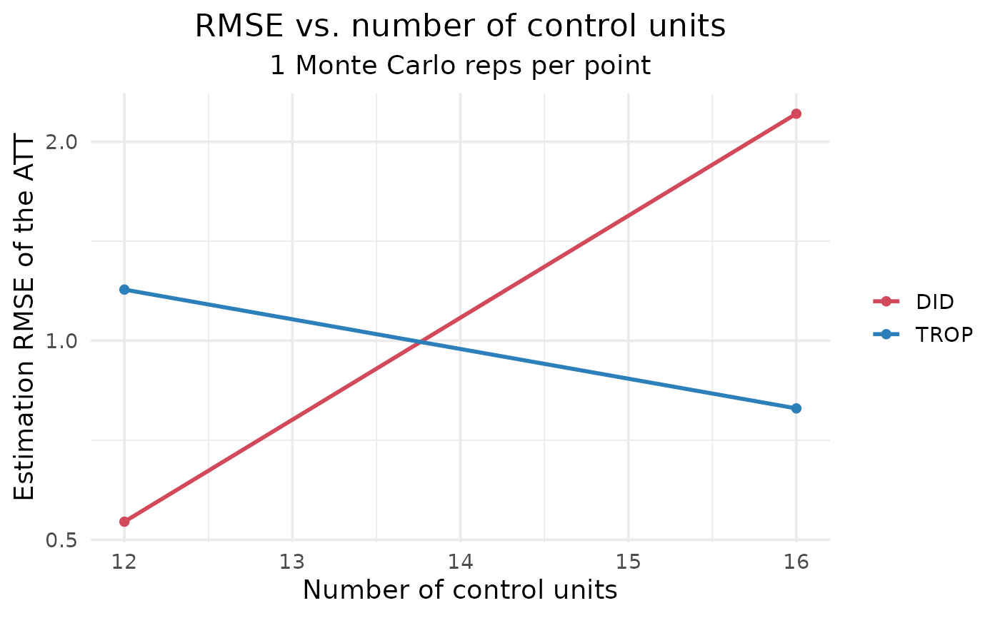

Sweeps one design dimension – the number of control units ("n_control"),
pre-treatment periods ("n_pre"), treated units ("n_treated") or
post-treatment periods ("n_post") – and, at each value, runs a
semi-synthetic Monte Carlo: panels are drawn from a latent factor model in
which treatment is selected on the factor loadings (so plain DID/TWFE is
biased), a known constant effect att is imposed, every estimator is run, and
the estimation RMSE against the known truth is recorded. The result is the
data behind the paper-style "RMSE vs. N_control / T_pre" line plot, one line
per estimator. With a dense values grid and enough n_runs the curves are
smooth, as in the paper.
Usage
rmse_curve(
vary = c("n_control", "n_pre", "n_treated", "n_post"),
values = NULL,
n_runs = 500L,
methods = c("DID", "SDID", "SC", "MC", "DIFP", "TROP"),
exclude = NULL,
n_control = 60L,
n_treated = 8L,
n_pre = 16L,
n_post = 6L,
rank = 4L,
att = 2,
noise = 1,
ar = 0.4,
trend_sd = 0.05,
anchor = "pooled",
control = trop_control(),
seed = 1L,
parallel = FALSE,
progress = interactive(),
verbose = FALSE
)Arguments
- vary
Which dimension to sweep:
"n_control","n_pre","n_treated"or"n_post".- values
Integer vector of values for the swept dimension. Defaults to
seq(20, 45, by = 5)for control units,seq(5, 38, by = 2)for pre-periods, andseq(2, 12, by = 2)for treated units or post-periods. Each value is an actual measured point (its own Monte Carlo); pass a denser/wider grid for smoother or longer curves.- n_runs
Monte Carlo replications per value (higher = smoother; the paper uses ~1000). Default 500. Note: with the dense default grid and six estimators this is a large simulation (thousands of fits per panel); reduce
n_runsand/orvaluesfor a quick look, or parallelise the outer loop.- methods
Estimators to include; any subset of the
panel_compare()methods. Defaultc("DID", "SDID", "SC", "MC", "DIFP", "TROP"), the six estimators compared in the paper.gsynth,augsynthandCScan be added if those packages are installed.- exclude
Optional character vector of methods to drop from
methods(e.g.exclude = "DIFP"). Unknown names are ignored with a warning.- n_control, n_treated, n_pre, n_post
Base design; the dimension named in
varyis overridden byvalues, the rest are held fixed. Defaults give a sizeable panel (60 controls, 8 treated, 16 pre- and 6 post-periods).- rank, att, noise
Number of latent factors, the imposed (true) ATT, and the idiosyncratic-noise scale.
- ar
AR(1) coefficient of the idiosyncratic errors (serial correlation).
- trend_sd
SD of the heterogeneous unit-specific linear trend slopes (non-parallel trends); treatment is also selected on this slope.
- anchor
Estimation anchor for the native ATT (
"pooled"by default for speed across the many fits).- control
Solver/CV controls from
trop_control().- seed
Base integer seed (each replication uses a distinct offset).
- parallel
Logical; if
TRUEand thefuture.applypackage is installed, the Monte Carlo tasks are run in parallel honouring the activefutureplan (e.g.future::plan(future::multisession, workers = 6)). Results are identical to the sequential default because each task is self-seeded. DefaultFALSE.- progress
Logical; print a rough progress indicator (completed fits, a percentage, elapsed time and an ETA) periodically while the curve runs. Helpful for the heavy large-
n_runsjobs. Defaults tointeractive(), so it shows in an interactive session and stays silent in scripts and tests. Messages go tostderr(); wrap insuppressMessages()to mute.- verbose
Logical; additionally print a line as each swept value finishes. Independent of
progress.
Value
A cf_rmse_curve (a data.frame) with columns method, x
(the swept value), rmse, bias, n_runs. The swept-dimension label is in
attr(., "vary").
Details
This is a simulation diagnostic on synthetic data; it does not take a user
panel. To run a curve on your own data, draw panels with sim_semisynthetic()
and call panel_compare() in a loop.
Examples
# \donttest{
# quick look (small grid + few reps); raise n_runs/values for paper quality
cc <- rmse_curve("n_control", values = c(12, 16), n_runs = 1, n_pre = 6, n_post = 3,
n_treated = 2, methods = c("DID", "TROP"),
control = trop_control(n_cv_cells = 5L, cv_cycles = 1L,
tol = 1e-3, seed = 1L))
autoplot(cc)

# }